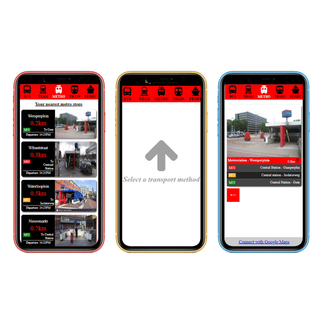

ISGA Metro app
Jaar: Propedeuse
Vak: Project 1 Individueel
Cijfer: 8
Opdracht: Maak een HTML/CSS prototype van een deel uit de International Study Guide Amsterdam
Zoals de opdracht zegt moest ik voor dit project een app maken van een deel uit de ISGA(International Study Guide Amsterdam). Voor dit project koos ik er voor om iets te verzinnen op een probleem dat bij de geinterviewde voor kwam, namelijk dat zij wel de tijd van de metro en bus weten, maar soms moeite hebben met het vinden van de metro- en/of busstop. Daarom heb ik een protorype gemaakt van een app die niet alleen de tijden laat zien, maar ook een foto bevat van de ingang van de metro of the omgeving van de busstop. Dit prototype moest alleen voor de telefoon worden gemaakt.